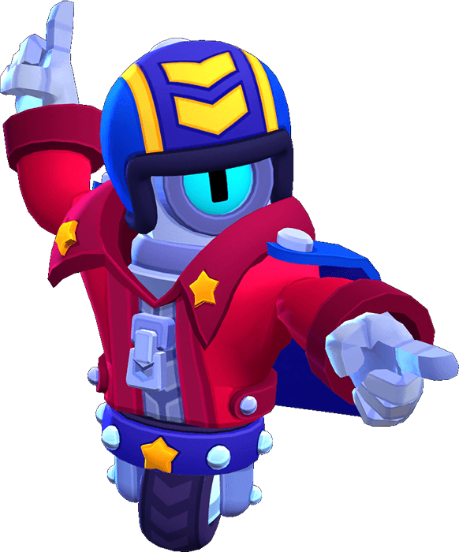

¿Quién es Stu
Edgar cree que nadie lo entiende. Su madre la que menos, pues se piensa que está pasando por una fase. Solo él sabe que la oscuridad que se aferra a su alma es para siempre.
Stu es un Brawler Épico que actualmente se desbloquea con 925 créditos o 169 gemas, anteriormente se desbloqueaba al llegar a la meta de 10000 trofeos. Stu tiene poca salud, daño moderado, alta movilidad con su súper y la habilidad única de cargar su súper de un solo golpe. Ataca con dos fuegos artificiales, y su súper es un dash corto que deja un rastro de fuego ardiendo detrás de él, quemando a los enemigos si lo tocan
|  |
NIVEL DE FUERZA 11 |
Sus gadgets
A TODA MECHA: Stu genera un potenciador que aumenta su velocidad y la de los aliados que se encuentren en su zona de efecto. |
>DEMOLICIÓN: El próximo súper de Stu puede atravesar obstáculos, haciendo que los escombros vuelen hacia adelante. Cada pieza de escombros inflige 200 de daño a cualquier oponente que golpee. |
Sus habilidades estelares
 |
SIN FRENOS: La distancia del súper de Stu aumenta un 71%. |
 |
CHUTE DE ADRENALINA: Stu recupera 400 puntos de salud al usar su nitroacelerador. |
Su hipercarga
INFINITRO: La súper de Stu siempre está cargada mientras la hipercarga este activa. |
 Braian Arancibia
Braian Arancibia Aya El Baarar
Aya El Baarar